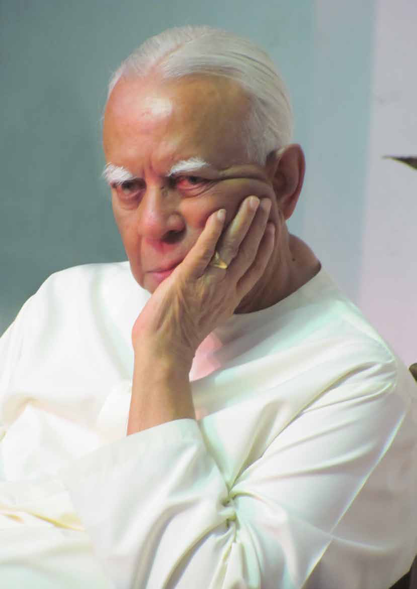

Sampanthan's Political Journey:
Sampanthan's Political Journey:
Jaffna Monitor
hellojaffnamonitor@gmail.com
9
Rajavarothayam Sampanthan, a towering
figure in Tamil politics known affectionately
as 'Perunthalaivar' (Great Leader), passed
away peacefully in Colombo on June 30,
2024. At the age of 91 years and 4 months,
Sampanthan was one of the last prominent
leaders from the era of Thanthai Chelva (S. J.
V. Chelvanayakam).
Sampanthan had been in poor health for a
considerable period and had been wheelchair-
bound for several years. His health issues had
notably caused him to miss parliamentary
duties and important meetings. An example
was an important meeting with the newly
reappointed Indian External Affairs Minister,
S. Jaishankar, three weeks before his death.
Sources close to Sampanthan mentioned that
he was prepared with notes for this meeting,
but his ailing health ultimately prevented him
from attending.
Sampanthan's last interview was with the
leading Tamil newspaper, Virakesari, a few
weeks before his passing. The interview
was titled 'jkpo; nghJNtl;ghsuhy;
jkpou;fSf;F vd;d gad;?" ("What Benefit
Do Tamils Gain from a Common Tamil
Candidate?"). The interviewer, journalist R.
Ram, shared with the Jaffna Monitor that
Sampanthan's
Political Journey:
From Leader to
Disregarded Elder
Special Article
BY:
Kaniyan Pungundran
fzpad; G+q;Fd;wd;
Jaffna Monitor hellojaffnamonitor@gmail.com 10

Jaffna Monitor hellojaffnamonitor@gmail.com 11 despite Sampanthan's physical struggles and declining health, his mental faculties were remarkably sharp. R. Ram recounted that Sampanthan's memory was impeccable; he recalled events and details with precision, and his responses to the most challenging and politically nuanced questions were delivered with astuteness and clarity. Ram noted that Sampanthan's answers reflected a profound understanding and insight into the political landscape. Remarkably, Sampanthan even remembered dates and times from the past with striking accuracy. Despite occasional moments when his speech was initially unclear, a repeated sentence would become perfectly comprehensible, showcasing his enduring acumen and experience. R.Ram added. However, Ram also observed Sampanthan's physical fragility. While his mind remained as sharp as ever, his body was frail, a testament to the toll that age and illness had taken on him. This juxtaposition of a keen intellect housed in a weakened body highlighted, Ram pointed out, the indomitable spirit of a leader who, even in his final days, remained deeply engaged and committed to the causes he championed throughout his life. From East to Eminence: Sampanthan's Political Legacy Sampanthan, arguably the first and only leader to rise to the pinnacle of Tamil politics from Sri Lanka's eastern region, represented a significant departure from the established norm. Historically, Tamil political leadership, including figures such as 'Thanthai' S. J. V. Chelvanayakam, Amirthalingam, and even LTTE's Prabhakaran during the armed struggle, predominantly emerged from the northern regions. Sampanthan was a distinguished representative of Sri Lanka's eastern Trincomalee district and served as the Parliamentary group leader of the Ilankai Tamil Arasuk Katchi (ITAK), also known in English as the Federal Party (FP)—a translation that is politically motivated and not entirely accurate. Rajavarothayam Sampanthan was born in Trincomalee on February 5, 1933, as the eldest of seven children. His father, A. Rajavarothayam, served in the government during British colonial rule and retired post- independence as the Superintendent of Stores at the Gal Oya Dam and Reservoir Construction scheme. This position afforded young Sampanthan a diverse and comprehensive education. Sampanthan's early education took him to several prestigious institutions. He began his primary schooling in Jaffna and continued his education at St. Patrick's College in Jaffna, St. Anne's College in Kurunegala, and St. Joseph's College in Trincomalee. His secondary education culminated at St. Sebastian's College in Moratuwa, known for its academic excellence. Following his secondary education, Sampanthan entered Ceylon Law College. During this era, before the title of Attorney-at- Law was established, he graduated as a proctor in the late 1950s. R.Ram
Jaffna Monitor hellojaffnamonitor@gmail.com 12 Sampanthan returned to his hometown of Trincomalee to commence his legal practice. His adept legal skills and dedication quickly earned him a reputation as one of the most popular and respected lawyers in the area. Sampanthan's political career is distinguished by its remarkable duration and significant impact. He served as a Member of Parliament for the Trincomalee electorate from 1977 to 1983, and subsequently as the Trincomalee district MP from 1997 to 2000, and again from 2001 until his passing in 2024. In total, his parliamentary service spanned over 32 years. From 2004 to 2014, Sampanthan held the position of leader of the Ilankai Tamil Arasuk Katchi (ITAK). Although he resigned from this role in September 2014, he continued to lead the now-uncertain Tamil National Alliance (TNA), in which ITAK was the chief constituent party. During his tenure, Sampanthan played a crucial role in navigating the Tamil political landscape and advocating for Tamil rights within his capacity. His style of politics— negotiating without angering the majority community or its politicians- starkly contrasted with Prabhakaran's slash-and-burn approach and was often frustrating for those accustomed to LTTE's school of politics. His leadership extended to being the leader of the Opposition in Parliament from 2015 to 2019, during which he played a crucial but ultimately unsuccessful role in national politics. Sampanthan's Political Journey and the Sri Lankan Tamils' Story At just 23 years old, Rajavarothayam Sampanthan joined the Illankai Tamil Arasu Kachchi (ITAK) in 1956, the very year Prime Minister SWRD. Bandaranaike's government enacted the Sinhala Only Act. This ill- Federal Freedom Party Satyagraha at Galle Face Against the Draconian Sinhala Only Act, with Thanthai Selva Seated
Jaffna Monitor hellojaffnamonitor@gmail.com 13 conceived piece of legislation effectively laid the groundwork for Sri Lanka's enduring ethnic conflict. The Act insidiously declared Sinhala as the sole official language of Sri Lanka, marginalizing the Tamil-speaking population and stripping them of their linguistic and cultural rights. This controversial and inflammatory legislation sent shockwaves through the Tamil community, fueling ethnic tensions and sparking protests. For the Tamil community, the Sinhala Only Act was a direct attack on their identity and existence within Sri Lanka. It led to widespread unrest and violence, deeply embedding a sense of injustice and alienation among Tamils. It is important to remember that before this Act, Tamils were not advocating for Tamil Eelam—a separate country for Sri Lankan Tamils. In fact, it is doubtful that the term "Tamil Eelam" was even in the lexicon of Sri Lankan Tamils before this evil Act was enacted. The Reluctant Politician: Sampanthan's Journey from Law to Leadership Thanthai Chelva, the then de facto Leader of Sri Lankan Tamils, saw potential in the most sought-after and popular civil and criminal legal practitioner, Rajavarothayam Sampanthan, who initially resisted entering politics despite close familial ties to prominent politicians. His uncle, S. Sivapalan, was the first MP for Trincomalee, elected in 1947 from the All Ceylon Tamil Congress (ACTC). Rare picture of the 1956 Galle Face democratic protest against the Sinhala Only Act under the leadership of S.J.V. Chelvanayakam
Jaffna Monitor
hellojaffnamonitor@gmail.com
14
Sampanthan's cousin, N. R. Rajavarothayam, later defeated
Sivapalan in the 1952 election as an ITAK candidate. Both men
were closely related to Sampanthan and to each other.
When N. R. Rajavarothayam passed away in 1963, ITAK
leader S.J.V. Chelvanayakam urged Sampanthan to run for
the vacant seat, but he declined. S.M. Manickarajah won
the by-election instead and was re-elected in 1965. Upon
Manickarajah's retirement in 1970, Chelvanayakam again
Thanthai S.J.V. Chelvanayakam
Mr. S.J.V. Chelvanayakam participating in a Satyagraha campaign in Trincomalee in
February 1961, with then parliamentarians (R-L) Mr. Thambiah Ehambaram (Muttur
MP) and Mr. N.R. Rajavarothiam (Trincomalee MP).
N. R. Rajavarothayam
invited Sampanthan to
stand as the ITAK candidate
for Trincomalee. Again,
Sampanthan declined, and
B. Neminathan won the
seat.
In 1976, Chelvanayakam
secured Sampanthan's
commitment to run for
Trincomalee, with the
support of his political heir,
Appapillai Amirthalingam.
Sampanthan finally agreed,
marking the beginning of
his distinguished political
career. Reflecting on this
decision, Sampanthan once
said, "Politics, I always
thought, was not my game,
and my heart was in the
courthouse. The politician
whom I respected most,
Thanthai Chelva, changed
the entire course of my life.
Meanwhile, on May 4,
1972, several Tamil political
Jaffna Monitor hellojaffnamonitor@gmail.com 15 parties, including the ITAK, Ceylon Workers Congress (CWC), and All Ceylon Tamil Congress (ACTC), formed the Tamil United Front (TUF) under the joint leadership of S. J. V. Chelvanayakam, S. Thondaman, and G. G. Ponnambalam. The TUF later changed its name to Tamil United Liberation Front (TULF) and adopted the demand for an independent Tamil state, the "secular, socialist state of Tamil Eelam." However, the CWC declined to support the newly formed TULF and left the coalition. Sampanthan's Entry into Politics: The 1977 Triumph and the Impact of the Vaddukoddai Resolution Sampanthan's political journey officially began in 1977 when he contested and won the Trincomalee seat as a Tamil United Liberation Front (TULF) member. He garnered 15,144 votes, which amounted to 51.76% of the votes, marking his entry into Parliament during a period of significant political upheaval in the country, particularly for Tamils. The catalyst for this upheaval was the adoption of the Vaddukoddai Resolution on May 14, 1976, in Pannakam near Vaddukoddai in Jaffna. This pivotal moment in the Tamil nationalist movement saw the TULF, under the leadership of S. J. V. Chelvanayakam and with key advocates like Appapillai Amirthalingam, call for the creation of an independent Tamil Eelam. The resolution signified a significant shift from earlier calls for federalism to advocating for a separate state for Tamils in the Northern
Jaffna Monitor hellojaffnamonitor@gmail.com 16 and Eastern provinces of Sri Lanka. However, this resolution was not a genuine demand for independence. Instead, it was a politically strategic maneuver by the Tamil leaders of the time aimed at garnering votes, mobilizing Tamil youth for their cause, and sending a resolute message to the Sinhala government. Despite the political machinations of the leaders, the resolution struck a deep chord within Tamil- speaking communities, particularly galvanizing the youth. Among them was Veluppillai Prabhakaran, who had already commenced his militant activities by assassinating Alfred Duraiappah on July 27, 1975. The Vaddukoddai Resolution had a profound impact, drawing large numbers of Tamil youths to TULF meetings. In a dramatic display of commitment, these youths would slash their forearms and anoint the foreheads of TULF leaders with their blood, underscoring their fervent dedication to the cause. One notable incident involved the future LTTE intelligence chief, "Pottu Amman," who earned his name by slashing his thumb and anointing TULF Member of Parliament Yogeswaran's forehead with his blood, like a bindi. Contrary to popular belief that his name stemmed from his involvement in violent activities, the moniker "Pottu Amman" directly originated from this symbolic act. In the LTTE's lexicon, the term "Pottu Vaithal" is often metaphorically equated with killing someone with a bullet to the forehead. Ironically, in a cruel twist of fate, the LTTE, whose leaders were initially inspired by the TULF's Vaddukoddai Resolution to take up arms, later assassinated TULF Members of Parliament Yogeswaran and Amirthalingam 13 years later. The Vaddukoddai Resolution, which called for an independent Tamil Eelam, was a pivotal catalyst that inspired and compelled many Tamil youths to embrace militancy, setting the stage for a profound and tragic transformation in the Tamil struggle. Following the adoption of the Vaddukoddai Resolution, the TULF ran in the 1977 Sri Lankan parliamentary elections, campaigning for an independent Tamil Eelam. Their platform resonated strongly in Tamil-majority regions, resulting in a significant victory where the TULF won 18 seats—10
Jaffna Monitor hellojaffnamonitor@gmail.com 17 from Jaffna, 4 from Vanni, 1 from Trincomalee, 2 from Batticaloa, and 1 from Ampara. The only seat they missed was Kalkudah in the Eastern Province, where K.W. Devanayagam of the UNP won and was subsequently appointed Minister of Justice. The July 21, 1977, elections also marked a dramatic shift in Sri Lanka's national political landscape. The United National Party (UNP) secured a landslide victory with 140 of the 168 seats, achieving an unprecedented majority, while the ruling Sri Lanka Freedom Party (SLFP) faced its worst defeat in history, falling from 91 seats to a mere eight. The TULF's 18 seats made it the main opposition in Parliament, a historic first for a minority party in Sri Lanka. TULF's general secretary, Appapillai Amirthalingam, was elected as the leader of the opposition, making history as the first Tamil to hold this position. Decades later, Sampanthan became the second Tamil politician to assume the leader of the Opposition role after the 2015 parliamentary elections. This occurred when the two main Sinhala parties formed a coalition government, leaving the Tamil National Alliance (TNA) as the primary opposition; with just 16 seats, R. Sampanthan became the Opposition Leader, the first Tamil in 37 years to occupy the position, and the house allocated for the opposition leader. Ironically, this house became a favorite target for critics who, despite Sampanthan's other obvious faults, chose to focus on this issue as a way of engaging in cheap politics—or, as some might say, in the classic way of Tamil politics. In 1983, Sampanthan and all other TULF MPs boycotted Parliament due to multiple pressures. Sri Lankan Tamil militants strongly opposed the extension of their term beyond six years, and the introduction of the Sixth Amendment to the Constitution of Sri Lanka added further complications. This Amendment mandated that all members of Parliament and public officers renounce support for a separate state and take an oath of allegiance to the unitary state of Sri Lanka. It explicitly prohibited any advocacy for the establishment of a separate state within Sri Lanka, making such actions a criminal offense. The political climate was further strained by the 1982 Sri Lankan national referendum, held on December 22, 1982, which offered the public the option to extend the life of Parliament by six years. Called by President J. R. Jayawardene, who had recently been re- elected. The referendum aimed to maintain the United National Party's (UNP) supermajority in Parliament. Opposition parties viewed this as a dictatorial move and campaigned against it. Despite their efforts, over 54 percent of votes cast were in favor of extending the life of Parliament. However, LTTE and other militant organizations firmly warned Tamil MPs against extending their terms, implying that doing so would come with serious consequences. This blend of political and militant pressures ultimately led to the TULF's decision to boycott Parliament, after three months of absence, Sampanthan forfeited his seat on September 7, 1983. Sealed in the Air: Sampanthan's Pivotal Role in the Indo-Lanka Accord As a prominent member of the Tamil United Liberation Front (TULF), Rajavarothayam Sampanthan played a key role in the crucial discussions leading up to the signing of the historic Indo-Lanka Accord of 1987. Reflecting
Jaffna Monitor hellojaffnamonitor@gmail.com 18 on this significant period, The Hindu's Meera Srinivasan reported an intriguing anecdote shared by Sampanthan. Sampanthan recalled learning that President J.R. Jayawardene, notorious for his cunning and strategic maneuvering, had managed to convince Romesh Bhandari, the special envoy of then-Prime Minister Rajiv Gandhi, that there was no linguistic contiguity between Sri Lanka's north and east. This misinformation threatened the prospects of merging the two provinces, a critical issue for the Tamil community. Determined to set the record straight, Sampanthan, along with TULF stalwarts A. Amirthalingam and M. Sivasithamparam, was in Madras (now Chennai) and sought an urgent meeting with Prime Minister Gandhi. The Prime Minister's Office informed them that Gandhi would be visiting Tiruchi (Tiruchirappalli) and suggested that the only way to secure a meeting would be to accompany him back to New Delhi on his chartered flight. Seizing the opportunity, the TULF trio took an overnight train from Chennai to Tiruchi. They managed to secure a place on Gandhi's flight and, after takeoff, were escorted to the Prime Minister's suite. Armed with a map, Sampanthan demonstrated the linguistic contiguity between Sri Lanka's north and east, meticulously explaining the geographical and cultural connections. As they prepared to disembark, Sampanthan, shaking hands and bidding farewell to the Indian Prime Minister, emphasized, "What I have told you is the absolute truth." His earnest plea and detailed presentation left a lasting impression on Gandhi. Months later, the Indo-Lanka Accord was signed, prominently featuring the merger of the north and east provinces among its key provisions. Reflecting on this critical moment, Sampanthan later remarked, "The merger was sealed in the air," referring to that decisive flight where he and his colleagues successfully conveyed their message to Prime Minister Gandhi. In the early 2000s, Rajavarothayam Sampanthan, whether out of fear of the LTTE or due to engaging in opportunistic politics, began to vehemently criticize the 13th Amendment, a pivotal element of the Indo-Lanka Accord. This was an agreement Sampanthan had originally supported and worked hard to help establish. During this period, when the LTTE was at its peak, Sampanthan famously declared that "they wouldn't even touch the 13th Amendment with a broomstick. However, following the annihilation of the LTTE in 2009, Sampanthan's stance shifted dramatically. Recognizing the Amendment's potential for devolving power and promoting reconciliation, he began to advocate for its implementation. From Defeat to Tragedy: Sampanthan's 1989 Campaign and Amirthalingam's Assassination In the 1989 parliamentary election held on February 15, Sampanthan ran as one of the ENDLF/EPRLF/TELO/TULF alliance candidates in the Trincomalee District. Unfortunately, the coalition won no seats, and Sampanthan secured only 6,048 votes.
Later that year, on July 13, 1989, the LTTE carried out the assassination of Amirthalingam, then the leader of the TULF and widely regarded as the Leader of Sri
Jaffna Monitor hellojaffnamonitor@gmail.com 19 Lankan Tamils. This event marked a significant turning point in the Tamil political landscape. The LTTE cited various reasons for branding Amirthalingam a traitor, but the underlying motive was more straightforward. Prabhakaran, the LTTE supremo, recognized that as long as Amirthalingam was alive, the Sri Lankan Tamils would never wholly accept Prabhakaran as their sole leader. Amirthalingam's influence and stature threatened Prabhakaran's quest for undisputed leadership. By eliminating Amirthalingam, Prabhakaran sought to consolidate his control over the Tamil movement and assert his dominance as the singular voice for the Tamil people. 1994 Defeat and 1997 Redemption Sampanthan ran again in the 1994 parliamentary election but failed to get re- elected, coming in second among TULF candidates. Arunachalam Thangathurai, a noble statesman who was well-liked by the rural public, polled the highest number of preferential votes in the August 1994 General Election, with Sampanthan coming second in the TULF's list for the Trincomalee district, securing 19,525 votes. Sampanthan re-entered Parliament in 1997 following the assassination of Arunachalam Thangathurai on July 5, 1997, which coincided with Black Tiger's Day. Thangathurai was killed along with six others, including three school principals, in a grenade attack and shooting by the LTTE while attending a function at Sri Shanmuga Hindu Ladies College in Trincomalee. Sampanthan ran in the 2000 parliamentary election as one of TULF's candidates in Trincomalee District, but unfortunately, the TULF did not win any seats in the district. Formation of the TNA: "Tiger Nominated Agents" LTTE supremo Prabhakaran often remained politically naive. However, in the early 2000s, Arunachalam Thangathurai A. Amirthalingam with his wife Mangaiyarkarasi
Jaffna Monitor hellojaffnamonitor@gmail.com 20 thanks to some astute advisers, he recognized the need for a political arm to legitimize the LTTE's actions. This realization led to the formation of the Tamil National Alliance (TNA), humorously but revealingly dubbed by some as "Tiger Nominated Agents." This improbable coalition brought together a mix of moderate Tamil nationalist factions and former militant groups. The alliance comprised the Tamil United Liberation Front (TULF), All Ceylon Tamil Congress (ACTC), Eelam People's Revolutionary Liberation Front (EPRLF), and Tamil Eelam Liberation Organization (TELO). The formation of the TNA was a strategic move, bringing together these diverse groups under one banner and providing political cover for the LTTE's actions. Ironically, TELO and EPRLF members, who were previously branded as traitors and hunted down by the LTTE, joined forces with the very organization that had once killed them with impunity. Sampanthan with LTTE Supremo Prabhakaran and LTTE Political Wing Head Tamilselvan Sampanthan with LTTE Political Wing Head Tamilselvan and LTTE Chief Political Strategist Anton Balasingham
Jaffna Monitor hellojaffnamonitor@gmail.com 21 Leaders of these militant organizations, whose friends and comrades had been brutally killed by the LTTE, bowed to Prabhakaran's authority and were effectively "baptized" by the LTTE. It was akin to the mythical transformation of Ahalya, who was turned to stone and then revived by the touch of Lord Rama—these militant groups, once ostracized by LTTE, were resurrected by LTTE itself. The Tamil National Alliance (TNA) was officially established in October 2001 to participate in the 2001 parliamentary elections on a unified platform. R. Sampanthan was appointed as the leader of the alliance by the Liberation Tigers of Tamil Eelam (LTTE). However, due to the lack of recognition from the Election Commission, the TNA contested the 2001 elections under the Tamil United Liberation Front (TULF) banner. In the 2001 parliamentary elections, the TNA, using the TULF name and its rising sun symbol, garnered 348,164 votes, representing 3.89% of the total votes. This electoral effort resulted in the TNA securing 15 out of 225 seats in the Sri Lankan parliament. From Target to Mouthpiece Upon his appointment as the leader of the TNA, R. Sampanthan showed little to no political shame, unabashedly becoming a mouthpiece for the LTTE. This was despite the LTTE having previously hunted down several leaders of his own party. Remarkably, Sampanthan himself had been on the LTTE's hit list just two years before the coalition was formed. Following the brutal LTTE suicide attack that killed Neelan Tiruchelvam on July 29, 1999, credible sources within the LTTE informed the Jaffna Monitor that Sampanthan was also a target. These sources revealed that Pottu Amman, the head of the LTTE intelligence wing, had assigned the task of eliminating Sampanthan to Charles, who was then in charge of LTTE intelligence operations in Colombo. On August 1, 1999, just two days after the assassination of Neelan Tiruchelvam, newspapers reported a significant security shift: "The Presidential Security Division (PSD) has been assigned to provide protection for the TULF General Secretary, R. Sampanthan. This decision replaces the Ministerial Security Division, which typically safeguards cabinet ministers and had been responsible for Dr. Neelan Tiruchelvam's security. The change follows considerable intelligence indicating a credible threat to Sampanthan's life from the LTTE." However, this scenario changed after the formation of the Tamil National Alliance. Sampanthan, too, was 'baptized' by the LTTE supremo and became a patriot. In return, Sampanthan went beyond all boundaries to whitewash the LTTE and its supremo, Prabhakaran. Neelan Tiruchelvam
Jaffna Monitor hellojaffnamonitor@gmail.com 22 Ananda Sangari On October 28, 2001, newspapers reported: "The Tamil Parties' Alliance has been formed to muster the support of the Tamil people and their political forces for the freedom struggle of the Liberation Tigers in and out of Parliament. The time has now come for all the Tamil political forces in the northeast to unite under one banner to give full support to the LTTE who are involved in the freedom struggle," declared Sampanthan. He elaborated, "Without the wholehearted participation of the Liberation Tigers, no firm and lasting political solution can be found for the Tamil national question. A political solution found in talks with the Liberation Tigers can only be implemented under the supervision of the international community. Therefore, the government should first declare a cease-fire and initiate talks with the Liberation Tigers without hesitation." In a brazen display of deference to the LTTE, he further stated, "One of the main demands of the Tamil parties' alliance is that no talks should be held by the government with any other group when negotiating with the Liberation Tigers." Revival of ITAK: The TNA's New Symbol and Political Journey In 2001, due to unforeseen circumstances, the newly formed Tamil National Alliance (TNA) lost the right to use the Tamil United Liberation Front (TULF) symbol, the rising sun. This led to the revival of the long-inactive Ilankai Thamil Arasu Katchi (ITAK). The TNA secured fifteen seats in the December 2001 parliamentary polls, including one national list MP. The TULF President at the time, Murugesu Sivasithamparam, was appointed to this national list seat. However, following Sivasithamparam's demise on June 5, 2002, Veerasingham Anandasangaree, a maverick politician, became the President of the TULF. Anandasangaree, true to his unyielding political style, was defiant towards Prabhakaran's authority. His attitude was essentially, "Who the hell is Prabhakaran to order me?" Predictably, he soon clashed with the LTTE Miraculously, and for reasons best known to Prabhakaran, the LTTE supremo did not order Anandasangaree's assassination, a stark contrast to his usual tactics. This decision left many of Prabhakaran's supporters deeply confused. At that time, this writer was a school student and overheard discussions among die-hard LTTE supporters, questioning why our beloved "Thesiya Thalaivar" (national leader) had not yet ordered Anandasangaree's assassination. Prabhakaran was revered almost as a deity, and disobeying or insulting him was considered blasphemy. Despite this, Anandasangaree remained resolute and unafraid, exuding an "I don't care even if you kill me" attitude. He even wrote a few letters to Prabhakaran, saying,
Jaffna Monitor hellojaffnamonitor@gmail.com 23 'jk;gp> ePAk; mope;J jkpo; ,dj;ijAk; mopf;fhNj" (Brother, do not destroy yourself and the Tamil race), which turned out to be prophetic a few years later. The LTTE ordered the TULF to remove Anandasangaree from office. Most of the TULF, out of fear of the LTTE, complied and removed Anandasangaree, prompting him to take the matter to court. Legal disputes over the rising sun symbol ensued, and the courts eventually ruled in favor of Anandasangaree, allowing him to retain the symbol. Consequently, the TNA opted for the ITAK symbol, the house, and the previously dormant ITAK gained new life, becoming the principal component of the TNA. 2004 Parliamentary Elections: TNA's Unprecedented Victory Amid Electoral Malpractices In the 2004 parliamentary elections, the Tamil National Alliance (TNA) contested under the Ilankai Tamil Arasu Kachchi (ITAK) symbol and achieved an unprecedented victory. They garnered 633,654 votes, accounting for 6.84% of the total vote, and secured 22 seats—the maximum number a Tamil party could win in the North and East. This triumph was largely attributed to the pervasive fear of the LTTE and evident electoral malpractices. This writer witnessed widespread electoral malpractice in Jaffna. In one instance, a friend of his, who was only 17 and couldn't legally vote, managed to cast five votes on polling day, all as fake votes for the TNA. His first- choice vote was for Selvarajah Kajendran, the then-president of the Jaffna University Student Union and now an MP and General Secretary of the Tamil National People's Front (TNPF). The atmosphere was such that polling agents and officers were verbally or indirectly instructed to just observe and not intervene. In some places, these officers even facilitated the malpractice. Selvarajah Kajendran alone garnered 112,077 votes in Jaffna district, an unprecedented figure in Jaffna's electoral history. This astonishing number was achieved through various malpractices. Many deceased individuals seemingly "reemerged" as their votes were cast, and numerous Tamils settled abroad also had their votes cast in this election despite not physically being present. The manipulation was so blatant that it turned the entire electoral process into a farce. While the TNA would have likely won the election even without these malpractices, the argument can be made that achieving 22 seats was significantly influenced by these fraudulent activities. TNA's Changing Fortunes: From LTTE-backed Victory to Independent Struggle After the election, Sampanthan was chosen as the leader of the TNA parliamentary group with the blessing of the Tigers. This appointment solidified his leadership of the alliance for the next two decades, even after the LTTE and its leadership were annihilated in Mullivaikkal in 2009. Sampanthan remained in his position until his death in 2024. By the time the TNA contested the general election in April 2010, the LTTE was no longer a force, having been obliterated by the Sri Lankan army, a downfall hastened by their own strategic blunders. Without the Tigers to manipulate the electoral process and stuff ballot boxes, the TNA faced a stark reality. The party managed to secure only 14 seats, a sharp decline from their previous triumphs. The
Jaffna Monitor hellojaffnamonitor@gmail.com 24 absence of the LTTE's heavy-handed influence laid bare the challenges of maintaining political dominance without the crutch of electoral malpractice. Sampanthan and the LTTE: A Controversial Alliance Sources close to Sampanthan told the Jaffna Monitor that Sampanthan was more pragmatic than a steadfast ideologue. They elaborated that while Sampanthan maintained his belief in nonviolent politics until the end and was not a fan of the LTTE's killing spree or its violent tactics, he always lamented the killings of TULF leaders Amirthalingam, Yogeswaran, Neelan Tiruchelvam, and many others by the LTTE. However, he never publicly criticized the LTTE regarding these actions. The slightest criticism came in an interview with an English newspaper (he conveniently avoided giving even the slightest criticism of the LTTE on Tamil platforms), where he stated, "The killings of Amirthalingam, Yogeswaran, and Tiruchelvam cannot ever be justified. They were wrong, and they should never have been killed. That was my view then, and that is my view today. That will always be my view. There is no question about it." Despite his personal views, Sampanthan accepted and recognized the LTTE as the sole representative of the Tamil people. Some might call this political opportunism, while others might see it as a political roller coaster. He even admitted in Parliament that their electoral victory was largely due to the support of the Tigers and officially recognized the LTTE as the sole voice of the Tamil populace. Like Prabhakaran, Sampanthan showed little concern for the involvement of TNA members in the peace process. He believed that in discussions about a political solution for the Tamil people, the Tigers alone could represent the Tamil community. This stance mirrored the LTTE's perspective, effectively sidelining other Tamil political entities and reinforcing the LTTE's role as the sole representative of the Tamil people in negotiations. Silence in the Face of Atrocity: Sampanthan's Complicity with the LTTE. Under Sampanthan's leadership, the TNA remained committed to the LTTE's brutal strategies until the very end. Having granted the LTTE the unprecedented status of the sole representative of the Tamil-speaking people— albeit by force—the TNA and Sampanthan remained silent as the LTTE dragged lakhs of innocent people with them to Mullivaikal. The LTTE's tactics became increasingly desperate and ruthless. As the Sri Lankan military closed in, the LTTE forcibly conscripted civilians, including children as young as ten, to fight on the frontlines. The TNA and Sampanthan did not speak out against these heinous actions. They never publicly asked the LTTE to release the civilians and allow them to escape the war zone, nor did they demand that the LTTE fight with dignity without using their own people as human shields. Despite the harrowing reports and pleas, the TNA and Sampanthan maintained a troubling silence. A considerable number of conscientious Tamils later told the Jaffna Monitor that they had contacted, begged, and pleaded with Sampanthan to denounce the LTTE's brutal strategy of using civilians as human shields. These individuals implored him to put pressure on the LTTE to release the civilians. However, whether out of fear, political expediency, or other reasons, he and the TNA
Jaffna Monitor hellojaffnamonitor@gmail.com 25 remained numb and indifferent to the plight of the Tamil people. On moral grounds, the TNA and Sampanthan can never disassociate themselves from the LTTE's murderous actions against their own people. Sampanthan knew exactly what he was doing. He fully realized that the LTTE was dragging the Tamil community into a destructive war, yet he chose to remain a mute spectator, complicit in their reprehensible strategy. This inaction not only tarnished his legacy but also left an indelible stain on his leadership, a silent betrayal of the very people he was supposed to protect. The weight of this moral failing cast a long shadow over his contributions. Sampanthan's Gamble: Aligning with Fonseka Against the Rajapaksas Just eight months after the Mullivaikkal tragedy and the complete destruction of the LTTE, the Rajapaksa brothers celebrated a victorious presidential election. In a politically audacious and courageous move, Sampanthan chose to support Sarath Fonseka, the former army commander of the Rajapaksa regime. Insiders close to Sampanthan revealed that he was acutely aware of the potential backlash and the risk of being labeled a traitor by some Sri Lankan Tamils for this decision. Fonseka, after all, was the military leader who had executed the final war. Sources close to Sampanthan revealed that he believed supporting the opposition candidate standing against the formidable Rajapaksa brothers was not just a political and diplomatic maneuver but also a reflection of the collective sentiment of the Tamil people. They further explained that Sampanthan was fully aware of the near impossibility of defeating the Rajapaksas at the height of their power. He also Sampanthan waving the Sri Lankan lion flag, a gesture that sparked significant discussion among Tamil nationalists and the diaspora Tiger proxies
Jaffna Monitor hellojaffnamonitor@gmail.com 26 received no assurances from Sarath Fonseka on Tamil rights and struggled to articulate how Fonseka would be better for Tamil interests than Rajapaksa. Nevertheless, he made the decision, even though supporting a ruthless army commander made him unfavorable to a section of Tamils and weakened the diaspora Tamils' attempts to brand the Sri Lankan army as genocidal. By supporting the chief who ran the entire military operations, Sampanthan, in a way, gave implicit recognition to the Army. 2015 Election and Becoming a Kingmaker Sampanthan became a kingmaker in the 2015 presidential election. Sources close to Sampanthan told the Jaffna Monitor that by supporting a candidate against Rajapaksa in the 2010 presidential election, Sampanthan laid the groundwork for the Rajapaksas' eventual defeat in 2015. They elaborated that, in the context of Buddhist-Sinhala supremacy, the victory at Mullivaikkal was their greatest and most challenging achievement, and Mahinda Rajapaksa was the torchbearer of Buddhist-Sinhala supremacy. Most of the Sinhala population did not consider him a president but a king. Yet, few anticipated, including Sampanthan, that the victors of Mullivaikkal, the torchbearer of Sinhala supremacy and the 'never crowned' king of the Sinhala people, could be overthrown within six years. They argued that this shift did not stem from a single election but was a result of Sampanthan's strategic stand in 2010. By uniting the Tamil people and demonstrating to the international community and southern Sri Lanka that the Tamils were willing to go to any lengths to defeat Rajapaksa, Sampanthan set the stage for the political shift that culminated in 2015, they told the Jaffna Monitor. Sources close to Sampanthan posited that his decision inspired the Sri Lankan opposition to unite and present a single candidate in the 2015 election. According to them, Sampanthan was instrumental in conveying to diplomatic circles and southern Sri Lanka that a direct contest between Ranil Wickramasinghe and the Rajapaksas would only guarantee another victory for the latter. Consequently, Maithripala Sirisena, a cabinet minister who was in the inner circle of Mahinda Rajapaksa even the previous night of him filing nomination, emerged as the consensus candidate for the opposition in the 2015 presidential election. The Tamil electorate's support was pivotal in securing this victory. Following his defeat, Mahinda Rajapaksa famously lamented to his wailing supporters in his hometown, "You did not defeat me. The Tamils defeated me." Eight months after the groundbreaking presidential election in which TNA-backed Maithripala Sirisena surprised many, particularly the Rajapaksa clan, by becoming the seventh President of Sri Lanka, a significant parliamentary election took place. The election led to an unexpected political shift when the two main Sinhala parties formed a coalition government. This coalition left the Tamil National Alliance (TNA) as the primary opposition party with just 16 seats. Consequently, R. Sampanthan became the leader of the opposition, marking him as the second Tamil politician to hold this position since Amirthalingam. A Quest for Peace: Sampanthan's Efforts and Disappointments Post-LTTE After the end of the LTTE's armed struggle, which marked the conclusion of the Tamil's armed struggle, as the LTTE had annihilated
Jaffna Monitor hellojaffnamonitor@gmail.com 27 other militant organizations, taken charge as the sole agent of the Tamil struggle, and eventually led countless people to their deaths at Mullivaikkal, Sampanthan redirected his efforts toward finding a peaceful solution to Sri Lanka's enduring ethnic conflict. Sources close to Sampanthan disclosed that he steadfastly believed he could resolve this seemingly intractable issue within his lifetime. These insiders also highlighted that Sampanthan was convinced that any lasting resolution required the consent of the Sinhala people, who form the vast majority in Sri Lanka. To this end, Sampanthan pondered ways to embrace the Sinhala people and their political parties, with the aim of dispelling the hostility, fears, and prejudices they harbored. He believed the LTTE's armed struggle had entrenched a deep-seated enmity among the Sinhala population. Consequently, Sampanthan adopted a political approach that sought to avoid further alienating the Sinhala community. He was resolute in his determination to find a solution acceptable to the Sinhala people and steered his party toward this goal. Sources close to him revealed that this determination drove Sampanthan to first oust the often troublesome Gajendrakumar Ponnambalam's faction from the TNA, which he considered a self-styled pseudo- Tamil nationalist. Following this, he targeted Suresh Premachandran of the Eelam People's Revolutionary Liberation Front (EPRLF). Premachandran had a notorious past as a mass murderer during the time of the Indian Peace Keeping Force (IPKF) intervention. He was later baptized by the LTTE and rebranded himself as a Tamil nationalist leader. These sources elaborated that Sampanthan's aim was to transform the TNA into a moderate political entity, shedding its image of Tamil extremism. He believed that portraying the TNA as a party open to peaceful and democratic solutions would garner broader support from both the Sinhala and international communities. According to people close to him, Sampanthan believed this approach would help find a peaceful solution for Tamils within a united Sri Lanka. To achieve this vision, he brought in figures like Sumanthiran and C.V. Vigneswaran, whom he perceived as moderates capable of steering the party toward a more centrist and inclusive stance. However, they later betrayed him, which is a different story altogether. Sampanthan and his TNA played a pivotal role in the regime change that occurred in 2015. As a result of that regime change, the Ranil-Maithri government accepted the UN's Resolution 30/1. In 2015, the Government of Sri Lanka co-sponsored this landmark UN Human Rights Council resolution, making commitments to promote reconciliation, accountability, and human rights in Sri Lanka. The resolution called for the establishment of a judicial mechanism with a special counsel to investigate allegations of human rights violations and international humanitarian law abuses. It also emphasized the importance of including Commonwealth and other foreign judges, defense lawyers, and authorized prosecutors and investigators in this process. The resolution mandated structural changes to resolve the ethnic problem and initiated arrangements to draft a new constitution. Sampanthan, believing the Sinhala politicians and their promises, fully cooperated. Sampanthan meticulously traced the constitutional evolution of Sri Lanka, highlighting the pivotal moments that shaped the nation's political landscape. He examined the 1947 Soulbury Constitution, crafted by
Jaffna Monitor hellojaffnamonitor@gmail.com 28 the British Colonial government, the first Republican Constitution of 1972, framed by the Sri Lanka Freedom Party-led government, and the second Republic Constitution of 1978, drafted by the United National Party. In each instance, he identified a critical shortfall: the absence of national consensus. "The ongoing conflict in Sri Lanka, which has persisted since Independence in 1947 and escalated into an armed struggle lasting 25-30 years, can be attributed to the lack of a Constitution founded on the broadest possible national consensus, tailored to meet the needs of our diverse and pluralistic society," Sampanthan asserted. He emphasized that all previous constitutions had been created without the contribution of the Tamil people. Sources close to Sampanthan told the Jaffna Monitor that he harbored a profound aspiration: to create a new constitution with the active participation of the Tamil community. He believed that only through such inclusive and comprehensive constitutional reform could Sri Lanka achieve lasting peace and unity. Sampanthan went to great lengths to support the Maithri-Ranil government, sometimes
Jaffna Monitor hellojaffnamonitor@gmail.com 29 acting as its spokesperson. The efforts to draft a constitution progressed to an interim report. When this interim report was submitted and debated in Parliament, Sampanthan declared the new constitution as a solution to the ethnic problem and gave promises to the Tamil masses. Sampanthan, who initially entered electoral politics when the Tamil United Liberation Front (TULF) campaigned on the promise of Tamil Eelam, later came to despise the term. During a heated parliamentary session, when Mahinda Rajapaksa's party was inciting anti- Tamil sentiment by alleging that the Tamils were seeking to divide Sri Lanka, Sampanthan delivered a powerful rebuttal. He stated, "I would like to put this on record because I want everyone in this country to know that it was malicious, vicious, fallacious, false propaganda on the part of President Rajapaksa and the Sri Lanka Podujana Peramuna (SLPP). If you proceed with this agenda, I want to tell you that [Tamil] Eelam will bloom, not on account of us, but on account of your Lotus Bud. Your Lotus Bud [the SLPP's symbol] will bloom into an Eelam. That is what will happen. Therefore, please resist your temptation to achieve cheap political gain by carrying on such false propaganda." In 2018, Maithripala Sirisena, the then "unfit president," one of the initiators of the constitution-drafting efforts, betrayed the process. Sampanthan's dream was shattered. Sources close to Sampanthan told the Jaffna Monitor that he was deeply saddened and felt betrayed. All the promises he made to the Tamil people turned out to be false. Not only was his belief defeated, but as a result, the TNA also lost its long-held dominance. In the next election, the party's votes scattered, going from 16 seats to 10 seats, and its overall vote percentage dropped from 4.62% to 2.82%. Sampanthan's Political Decline: The TNA's Fragmented Legacy Under Sampanthan's leadership, the Tamil National Alliance (TNA) has become increasingly fragmented. The chief constituent party, Ilankai Thamil Arasu Katchi (ITAK), stands on one side, while the other two constituent parties, the Tamil Eelam Liberation Organization (TELO) and the People's Liberation Organization of Tamil Eelam (PLOTE), align on the opposite side. This division is attributed to the politics of Sampanthan's political heir, M.A. Sumanthiran, and Sampanthan's perceived ineffectiveness in maintaining unity within the alliance. Of the ten seats held by the TNA in Parliament, six belong to the ITAK, three to TELO, and one to PLOTE. The alliance has now effectively been reduced to only the ITAK, making the TNA synonymous with ITAK. Under Sampanthan's leadership, the TNA's political clout has dramatically diminished. From a staggering twenty-two seats—the maximum number of seats a Tamil party can win from the North and East—the TNA has been reduced to a mere six seats. Currently, even the ITAK is embroiled in internal turmoil, splitting into two factions: the Sumanthiran faction and the Shritharan faction, both engaged in a fierce legal battle. When his beloved ITAK was dragged into court, Sampanthan was powerless to intervene. In a family, when conflicts arise, the elders step in to resolve them. It is the same within a party—respected senior leaders resolve disputes. But as a senior leader, Sampanthan's word was not heeded by anyone. His once authoritative voice was ignored by everyone, including Sumanthiran, the very person he
Jaffna Monitor hellojaffnamonitor@gmail.com 30 had brought into the political arena. Adding insult to injury, Sampanthan's influence had diminished so drastically that he had to lodge a formal complaint about appointments being made in his own electoral constituency without his knowledge. The Decline of Sampanthan's Leadership One could argue that a leader's true legacy is defined by their protégés, how they keep their party united during their tenure, and how they fulfill the promises made to the people they represent. Unfortunately, neither Sumanthiran nor C.V. Vigneswaran— whom Sampanthan had elevated to political prominence—managed to uphold his vision. C.V. Vigneswaran distanced himself from Sampanthan, openly criticizing his approach, while Sumanthiran, once considered Sampanthan's crown prince, publicly humiliated the veteran leader. In his final days, Sampanthan became a leader who was disrespected by everyone, including his own protégés. He silently had to witness the disintegration of his alliance and the fragmentation of his party. Moreover, Sampanthan failed to fulfill the promises regarding Tamil rights made to the Sri Lankan Tamils during the Yahapalana government, in which he, being the opposition leader, often acted as the government's spokesperson. The high hopes for political reform and greater autonomy for Tamils were left unfulfilled, leading to widespread disillusionment within the Tamil community. One may argue, How could he hope to unify a diverse and divided nation when he couldn't maintain unity within his own party?